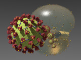

 ScaryCoronavirus is a library module from the Persistence of Vision Raytracer (POV-Ray) Object Collection. It models a Gorgon-like virion based on the SARS-CoV-2 coronavirus. The protein spikes have demonic-looking faces. It is hoped that this module will provide some cathartic relief during the COVID-19 pandemic.
| Key Files | |
|---|---|
| File | Description |
scarycoronavirus.html |
The user manual (this document) |
scarycoronavirus.inc |
The ScaryCoronavirus library. |
scarycoronavirus.pov |
An example scene description file |
scarycoronavirus_35.ini |
An INI file to render the sample scene with POV-Ray 3.5 or 3.6 |
scarycoronavirus_37.ini |
An INI file to render the sample scene with POV-Ray 3.7 or later |
scarycoronavirus.jpg |
Sample output images |
scarycoronavirus_thumbnail.jpg |
|
| Administrative Files | |
| File | Description |
scarycoronavirus_description.txt |
A brief description of ScaryCoronavirus |
scarycoronavirus_keywords.txt |
A list of keywords |
scarycoronavirus_prereqs.txt |
Prerequisites |
scarycoronavirus.css |
Formatting for this user manual |
Depending on where you obtained this library, there may be other administrative files included with this download,
including one named README{series-of-digits}.html which contains important information about using the POV-Ray Object Collection.
Please see the Object Collection User Guide if this file is not present.
All file names in this library and all global and local identifiers defined in scarycoronavirus.inc comply fully with the
Object Collection naming standards, as
revised August 2008 and
proposed August 2012.
The files in this library may be safely stored in the same folder as other fully compliant Object Collection contributions.
The reserved prefixes for this library are “ScaryCoronavirus” and “scov,” including any uppercase and lowercase variants.
ScaryCoronavirus uses the Object Collection library RoundEdge, which reserves the prefixes “RoundEdge” and “RE,” including any uppercase and lowercase variants.
To avoid conflicts, do not introduce into your scene description file any identifiers with any of these prefixes as names,
or any identifiers that start with any of these prefixes plus an underscore.
The identifier View_POV_Include_Stack from the standard include file debug.inc is referenced by scarycoronavirus.inc, although debug.inc itself is not used.
Include this file once prior to using any of the macros:
#include "scarycoronavirus.inc"
Including the file more than once is harmless, though unnecessary.
Creates a coronavirus with a demonic-looking face on each of its protein spikes.
| Formal Parameter | Type | Description |
|---|---|---|
Diameter |
float | The diameter of the virion, with each POV unit corresponding to 1 nanometer. The diameters should be between 50 and 200; diameters smaller than 50 are disallowed. |
t_Envelope |
texture | The texture of the envelope. |
t_Spike |
texture | The texture of the spike proteins. For some quality levels, a normal will be applied to this texture. Textures for the eyes and mouth will be automatically supplied. |
t_MProtein |
texture | The texture of the M-protein studs. For some quality levels, a normal will be applied to this texture. |
t_EProtein |
texture | The texture of the E-protein studs. |
Quality |
float | A quality code for the model. |
| Identifier | Type | Description | Default |
|---|---|---|---|
scov_Debug |
float | If on, each call to ScaryCoronavirus() will write data to the debug stream;
and also issue a warning if the construction algorithm is unable to avoid a collision between stud proteins.
|
off |
scov_Glow |
float | The eyes and mouth textures have an intrinsic glow. scov_Glow is a multiplier for the intensity of this glow. |
1.0 |
scov_Seed |
float | A pseudorandom seed for the placement of stud proteins and the lumpiness of the envelope. | 574647 |
If you wish a different value for scov_Seed or scov_Glow,
you must declare it prior to #including scarycoronavirus.inc.
Parameter scov_Debug may be changed at any time.
| Identifier | Type | Description |
|---|---|---|
SCOV_BLOB_QUALITY |
float | The envelope is constructed with a single lumpy blob, and a normal is applied to some of the protein textures. |
SCOV_DRAFT_QUALITY |
float | A smooth sphere is used for the envelope, and no normal is applied to the protein textures. |
SCOV_MERGE_QUALITY |
float | The envelope is constructed with a merge of a sphere and a blob of lumps, and a normal is applied to some of the protein textures. |
SCOV_UNION_QUALITY |
float | The envelope is constructed with a union of a sphere and a blob of lumps, and a normal is applied to some of the protein textures. |
| Identifier | Type | Description | Value |
|---|---|---|---|
ScaryCoronavirus_Version |
float | The ScaryCoronavirus version. | 1.0 |
SCOV_HSPIKE |
float | The height, in nanometers, of the protein spike above the surrounding envelope. | 12.0 |
Any identifiers in scarycoronavirus.inc that are not documented in this manual are considered “private,”
and are subject to change or elimination in a future update.
Copyright © 2020 – 2025 Richard Callwood III. Some rights reserved.
This library is free software: you can redistribute it and/or modify it under the terms of the GNU Lesser General Public License as published by the Free Software Foundation, either version 3 of the License, or (at your option) any later version.
This library is distributed in the hope that it will be useful, but WITHOUT ANY WARRANTY; without even the implied warranty of MERCHANTABILITY or FITNESS FOR A PARTICULAR PURPOSE.
The author of this library is not a microbiologist. This model is not intended to be an accurate portrayal of any virus.
| Version | Date | Notes |
|---|---|---|
| n/a | 2020 March 28 |
|
| 1.0 | 2020 April 15 |
|
| 1.0A | 2020 May 9 |
|
| 1.0B | 2021 August 15 |
|
| 1.0c-rc.2 | 2025 November 26 |
|
Please obtain your COVID-19 information only from epidemiologists or other relevantly qualified medical experts. And remember that nothing you read on the Web ever constitutes medical advice.
{kind=link}